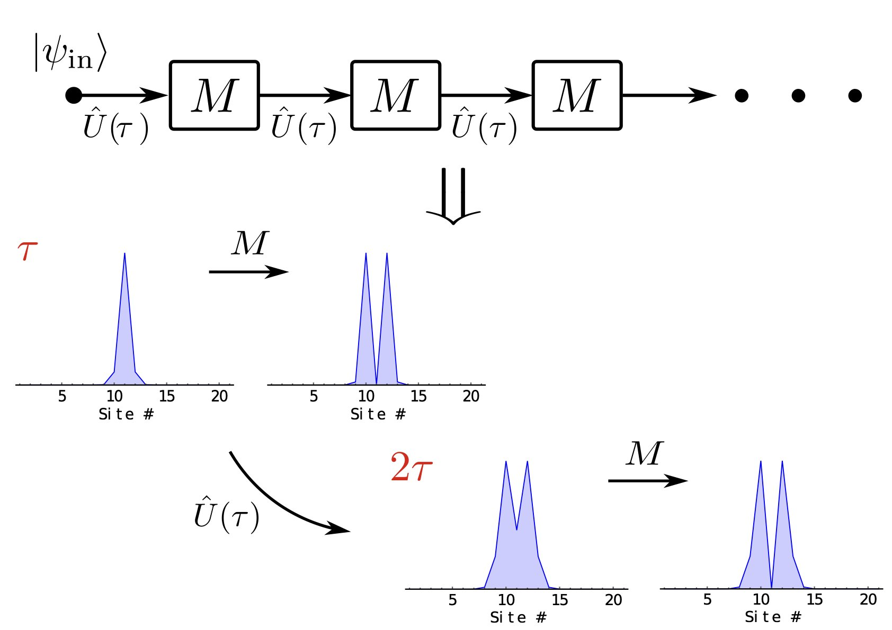
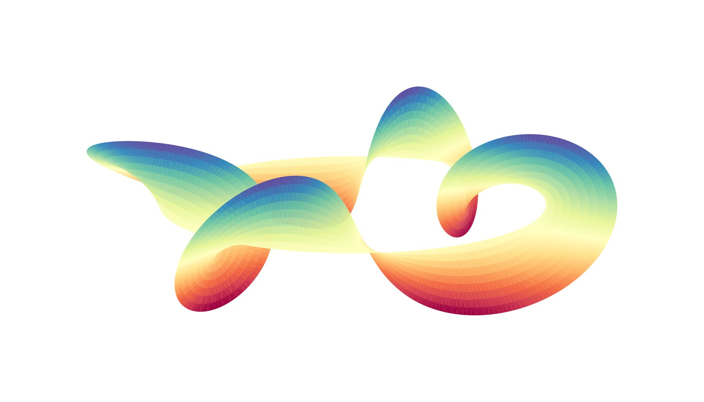
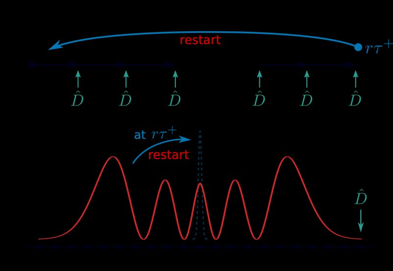
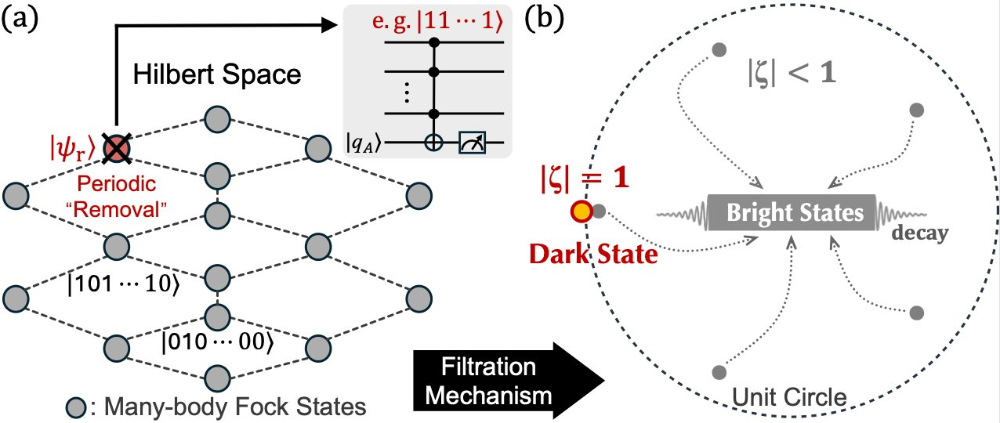
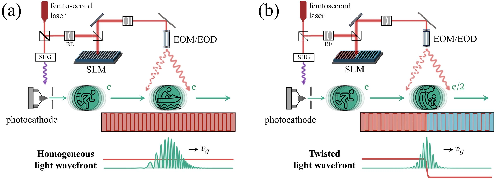

Publications
A thematic guide to my papers, with representative schematics and short explanations of the ideas behind each direction. The full publication list and citation counts are available on Google Scholar.
Time of Arrival for Monitored Quantum Dynamics


We use repeated strong measurements to monitor a quantum walker's first recurrence or arrival at a target state. On finite systems, the recurrence time shows a topological effect: its quantized jumps are accompanied by large fluctuations. This signature also extends to arrival problems, where the system can evade detection by entering dark states. Near the emergence of such states, the mean arrival time remains finite but can become gigantic. The repeated-measurement protocol provides an operational route to quantum time of arrival, can be implemented on quantum computers, and has led us to study finite-measurement effects in real devices.
Quantum Reset

Dark states in repeated-measurement processes are induced by destructive interference. After successive failed measurements, a quantum system is increasingly likely to fall into a dark subspace and remain hidden from the detector. This resembles a classical random walker making excursions away from an absorbing boundary. Resetting can resolve this difficulty by interrupting unfavorable trajectories. The same idea appeared earlier in biochemical processes, such as unbinding in enzymatic reactions, and in computer science, where restart accelerates Las Vegas and combinatorial search algorithms. We bring this strategy into monitored quantum dynamics, both theoretically and experimentally.
Quantum State Preparation with Repeated Measurements

Here we turn dark states from an obstacle into a resource. In a repeated-measurement process, the dark state is a fixed point of the dissipative measurement map, similar in spirit to the steady state of a Lindbladian process. Because dark states can be superpositions of energy eigenstates, they can be engineered into controllable cat states. We show how such states can be prepared with multi-qubit Toffoli gates and post-selections for generic quantum chaotic many-body systems, even random matrices, using tools available on current quantum hardware.
Free-Electron Quantum Optics

Interacting with light that carries a twisted wave front, a low-energy free electron can form a topological bound state. The bound state is described by a Jackiw-Rebbi solution of the Dirac equation, with the mass term controlled by the light field. This gives a route to flying, dispersion-free electrons carrying quantum number e/2.